Part 0 — Camera Calibration & 3D Scan
0.1 — Calibrating My Camera with ArUco
I first printed a grid of 4×4 ArUco tags (OpenCV dictionary DICT_4X4_50) and captured
~30–50 images with a fixed zoom on my phone. The calibration script
calibrate_from_aruco loops over all images, detects ArUco corners, and feeds
corner correspondences into cv2.calibrateCamera. I treat each detected marker as a separate “view” with 4 world points and 4 image points where
world points lie on the plane \(z=0\) with units in meters, defined by make_tag_object_points(tag_size) (imgs with no detected tags are also skipped).
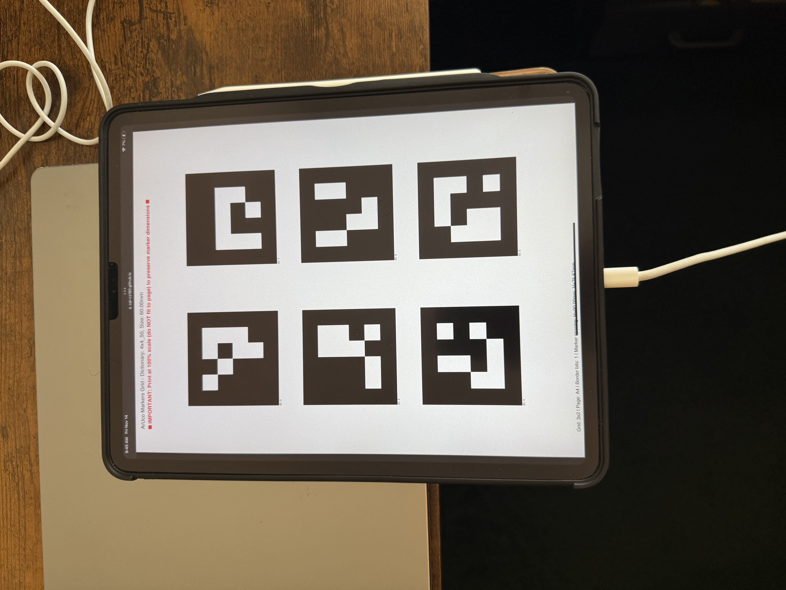
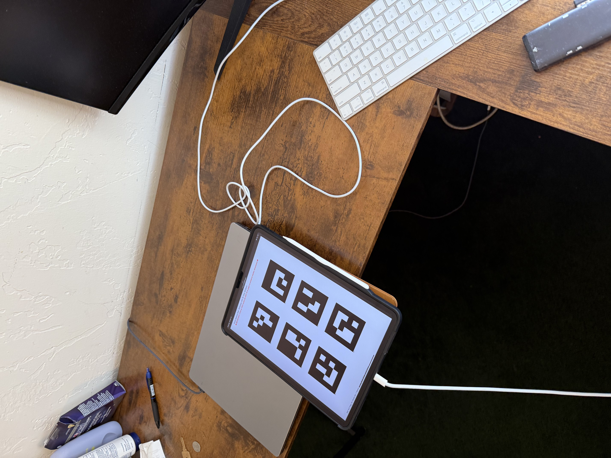
0.2 — Capturing My Object Scan
For my custom NeRF dataset, I chose a small retainer-case object and placed one printed ArUco tag next to it. Using the same phone and zoom as calibration, I captured 30–50 images from diverse viewpoints. Some things I ensured where that I kept exposure and lighting as stable as possible (no auto-exposure swings), varied horizontal and vertical angles while maintaining roughly constant object distance, and ensured the ArUco tag always remained visible and surrounded by white margin for robust detection.
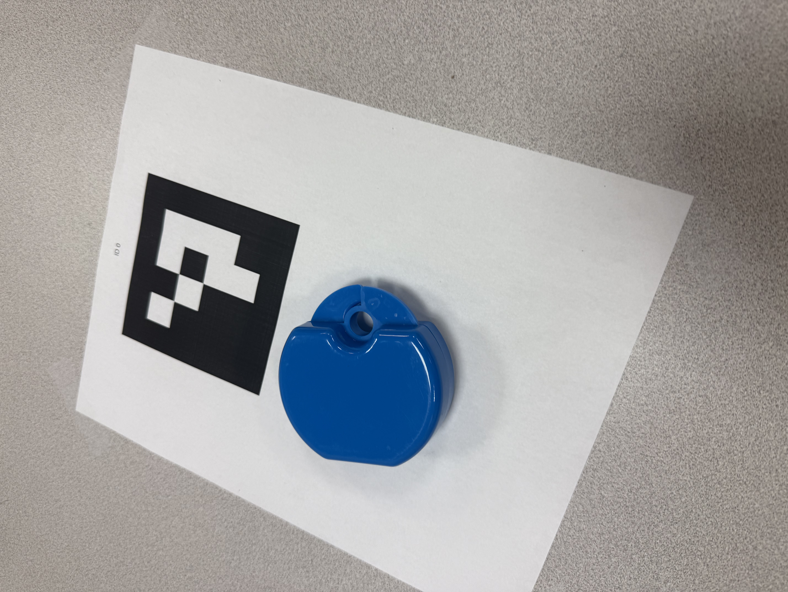
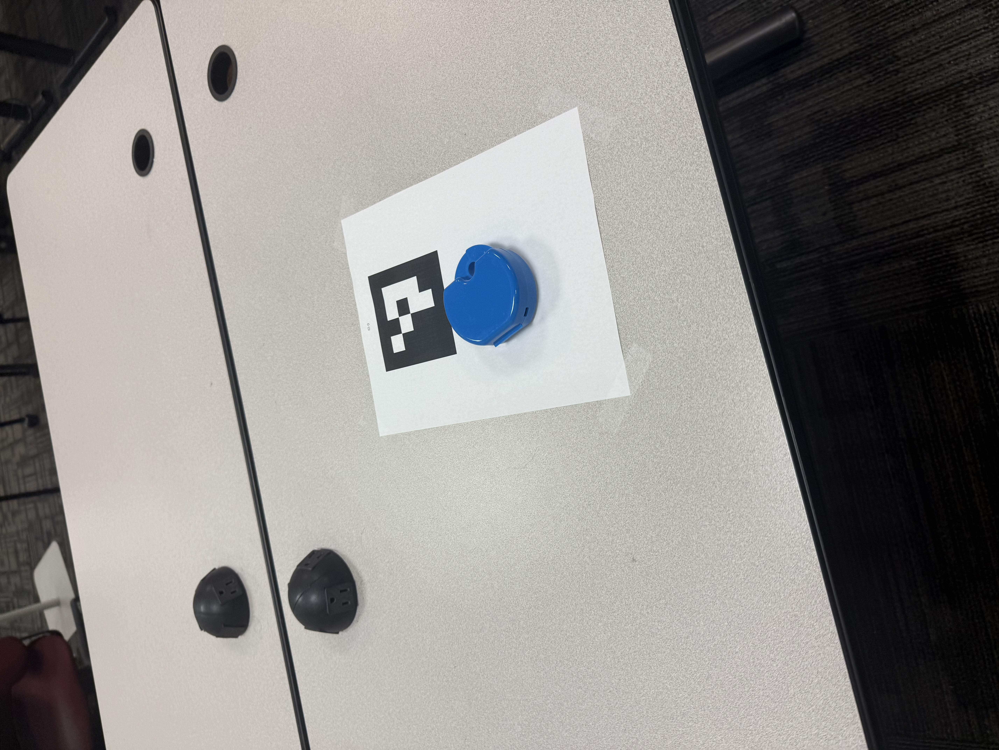
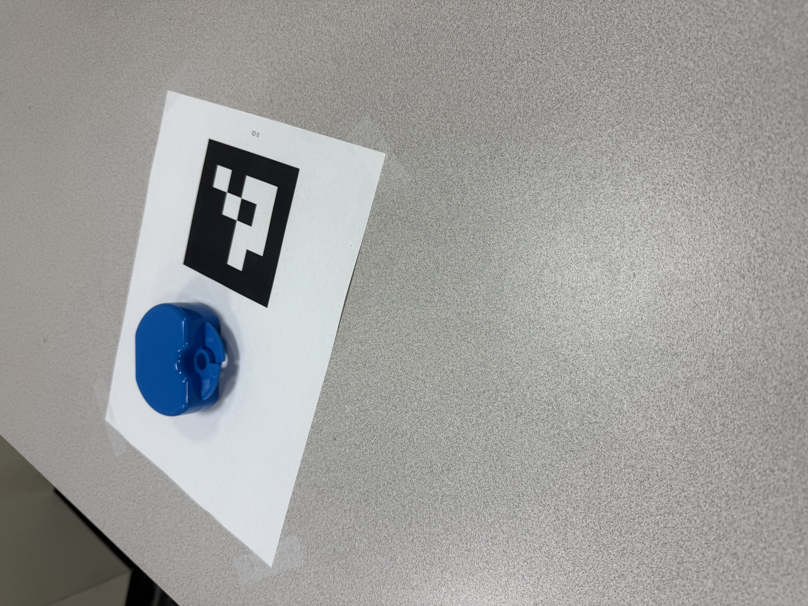
0.3 — Pose Estimation with PnP + Viser Visualization
With intrinsics and distortion from Part 0.1, I use estimate_object_camera_poses to
compute camera-to-world transforms for each object image where we detect the single ArUco tag per image, collect its 4 corners as imagePoints, use cv2.solvePnP with known 3D tag corners to get rvec and tvec,
and convert world-to-camera \([R|t]\) to camera-to-world.
I then visualize the resulting camera frustums and images using viser. Each camera is
added with add_camera_frustum, using the recovered c2w, the intrinsics,
and the RGB image.
Camera Cloud Visualizations (Deliverable: 2 screenshots)
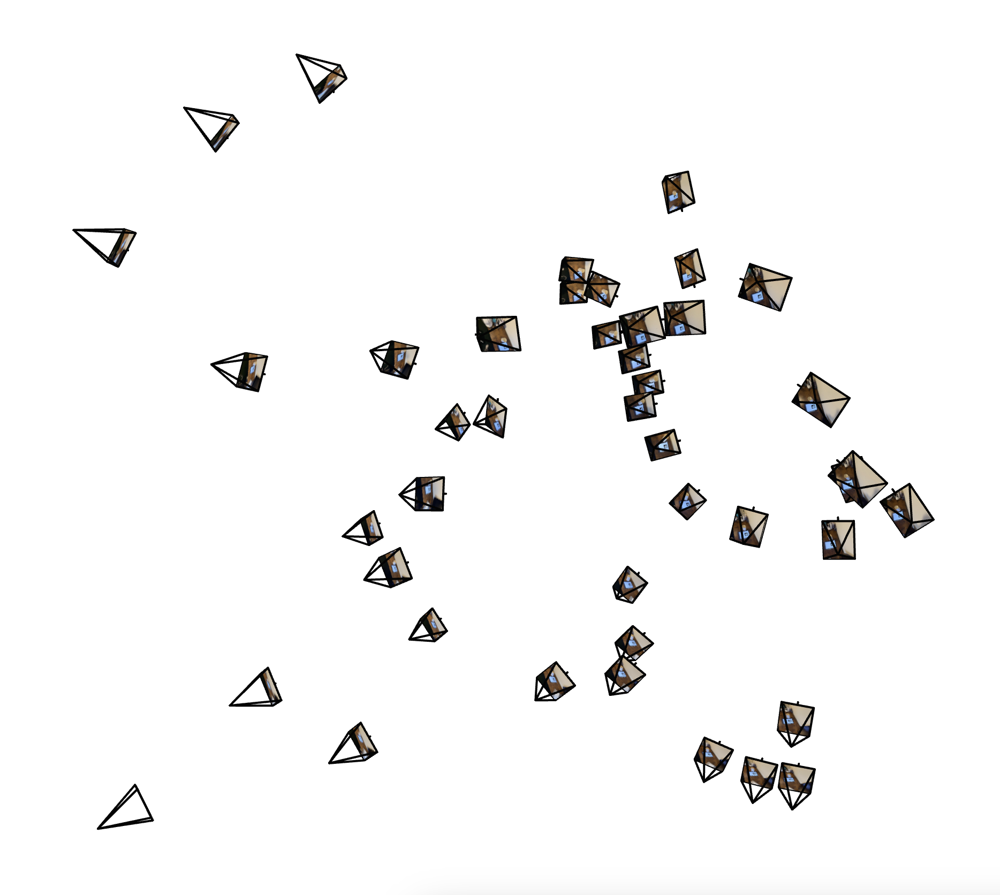
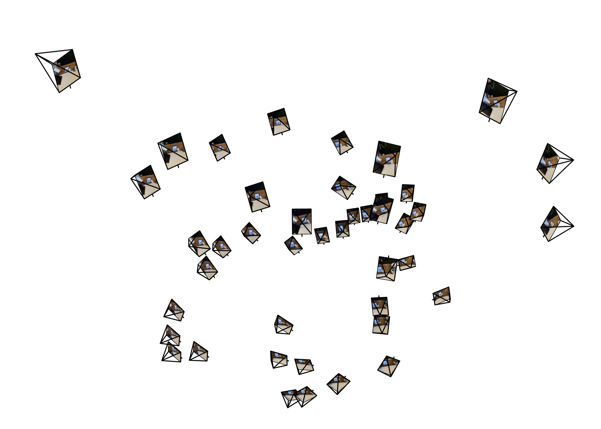
OpenCV returns poses as world-to-camera:
\[ \mathbf{x}_c = R\,\mathbf{x}_w + t,\quad [R|t] = \text{w2c}. \]My conversion to camera-to-world:
\[ \mathbf{x}_w = R^\top \mathbf{x}_c - R^\top t,\quad \text{c2w} = \begin{bmatrix} R^\top & -R^\top t\\ 0 & 1 \end{bmatrix}. \]0.4 — Undistorting Images & Building a NeRF Dataset
The function undistort_and_build_nerf_dataset takes the raw RGB object images, the
c2ws, and calibration parameters and produces a NeRF-compatible .npz:
- Compute
new_camera_matrixandroiviacv2.getOptimalNewCameraMatrix(withalpha=0). - Undistort each image using
cv2.undistort, crop to the ROI, and adjust the principal point to account for the crop: \[ c'_x = c_x - x_{\text{offset}},\quad c'_y = c_y - y_{\text{offset}}. \] - Stack undistorted images into
(N, H', W', 3)and split them sequentially into train / val / test. - Estimate focal length as the average of \(f_x\) and \(f_y\) from the cropped intrinsics.
- Save everything to
my_object_data.npzwith the required keys.
Part 1 — 2D Neural Field for Single Images
Model Architecture
For the 2D neural field, I represent an image as a continuous function \(f_\theta : (x,y) \mapsto \mathbf{c} \in [0,1]^3\), implemented as:
- Input: normalized pixel coordinates \((x, y) \in [0,1]^2\).
- Positional Encoding:
PositionalEncoding2D(L)with: \[ \gamma(x,y) = [x, y, \{\sin(2^k \pi x), \cos(2^k \pi x)\}_{k=0}^{L-1}, \{\sin(2^k \pi y), \cos(2^k \pi y)\}_{k=0}^{L-1}], \] givingout_dim = 2 + 4L. - MLP:
NeuralFieldMLP— a fully-connected network:- Depth: 4 hidden layers
- Width: 256 channels per layer
- Activation: ReLU
- Final head: Linear → Sigmoid to keep RGB in (0,1)
- Optimizer: Adam with learning rate \(1\times10^{-2}\).
- Loss / metric: MSE loss and PSNR \(\text{PSNR} = -10\log_{10}(\text{MSE})\) on normalized \([0,1]\) colors.
for it in range(num_iters):
coords_batch, colors_batch = next(loader) # (B,2), (B,3)
coords_batch = coords_batch.to(device)
colors_batch = colors_batch.to(device)
enc = encoder(coords_batch) # positional encoding
pred = model(enc) # MLP output
loss = mse(pred, colors_batch)
optimizer.zero_grad()
loss.backward()
optimizer.step()
Training Progression (Provided Test Image & My Own Image)
For both images I used L=10, width = 256, batch size 10k, and 2000 iterations. Below are
snapshots showing how the reconstruction sharpens over time.
Provided Test Image — Training Progress
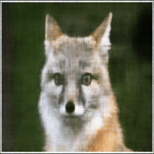
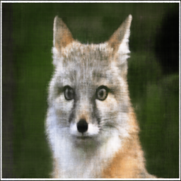
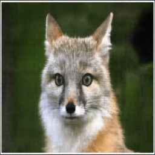
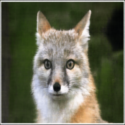

Provided Test Image — Training Progress
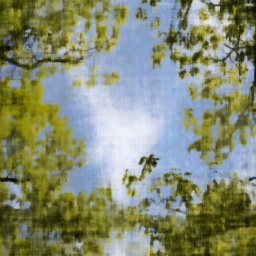
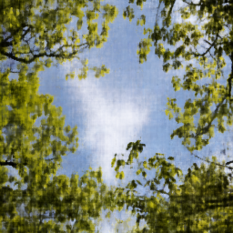
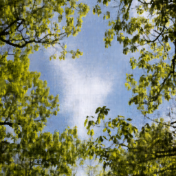

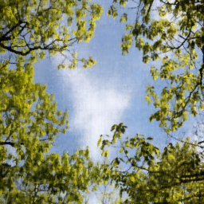
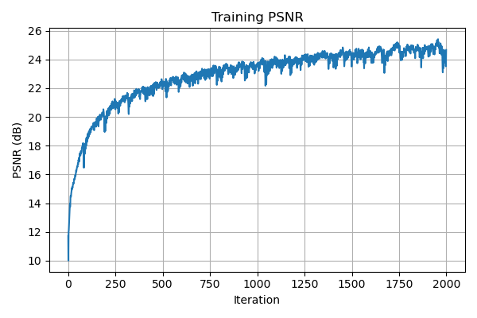
Hyperparameter Study — Positional Encoding Frequency × Width (2×2 Grid)
I explored the effect of positional encoding frequency and network width by training four variants on the same image:
- Low frequency, narrow: \(L = 4\), width = 64
- Low frequency, wide: \(L = 4\), width = 256
- High frequency, narrow: \(L = 10\), width = 64
- High frequency, wide (baseline): \(L = 10\), width = 256
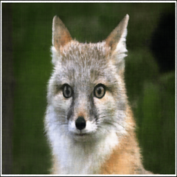
Part 2 — NeRF from Multi-view Images (Lego)
2.1 — Rays via Camera & Pixel Geometry
I implement the full geometry chain needed to go from pixels to rays in world space.
transform(c2w, x_c): Applies a camera-to-world matrix to 3D points. Supports both a single pose and batched poses with broadcasting.pixel_to_camera(K, uv, s): Inverts the pinhole projection: \[ X = (u - c_x)\frac{Z}{f_x},\quad Y = (v - c_y)\frac{Z}{f_y},\quad Z = s, \] where \(s\) is a chosen depth (I use \(s=1\) when constructing direction vectors).pixel_to_ray(K, c2w, uv):- Lift pixel centers (\(u+0.5,v+0.5\)) into camera space via
pixel_to_camera. - Transform to world space with
transform. - Ray origin is the camera center (translation from
c2w). - Ray direction is the normalized vector from origin to the world-space point.
- Lift pixel centers (\(u+0.5,v+0.5\)) into camera space via
For each pixel \((u,v)\), the ray is:
\[ \mathbf{o} = \text{c2w}_{0:3,3}, \quad \mathbf{x}_c = K^{-1} \begin{bmatrix} u \\ v \\ 1 \end{bmatrix}, \quad \mathbf{x}_w = R\,\mathbf{x}_c + t,\quad \mathbf{d} = \frac{\mathbf{x}_w - \mathbf{o}}{\|\mathbf{x}_w - \mathbf{o}\|_2}. \]2.2–2.3
Here, we precompute rays for all training images through:
- Flattening all pixels across all cameras into
uvsof shape(N*H*W, 2). - Storing corresponding RGB colors in
pixelsand also precomputesrays_oandrays_dfor each pixel. - Provides:
sample_rays(num_rays)— NumPy sampling (for visualization).sample_batch_torch(num_rays)— PyTorch sampling (for training).
Points along each ray are sampled uniformly between near and far.
Camera + Rays + Samples Visualization
Using viser, I plot lego cameras (training set c2ws_train, subset of 100 rays sampled from the dataset, discrete sample points along those rays.
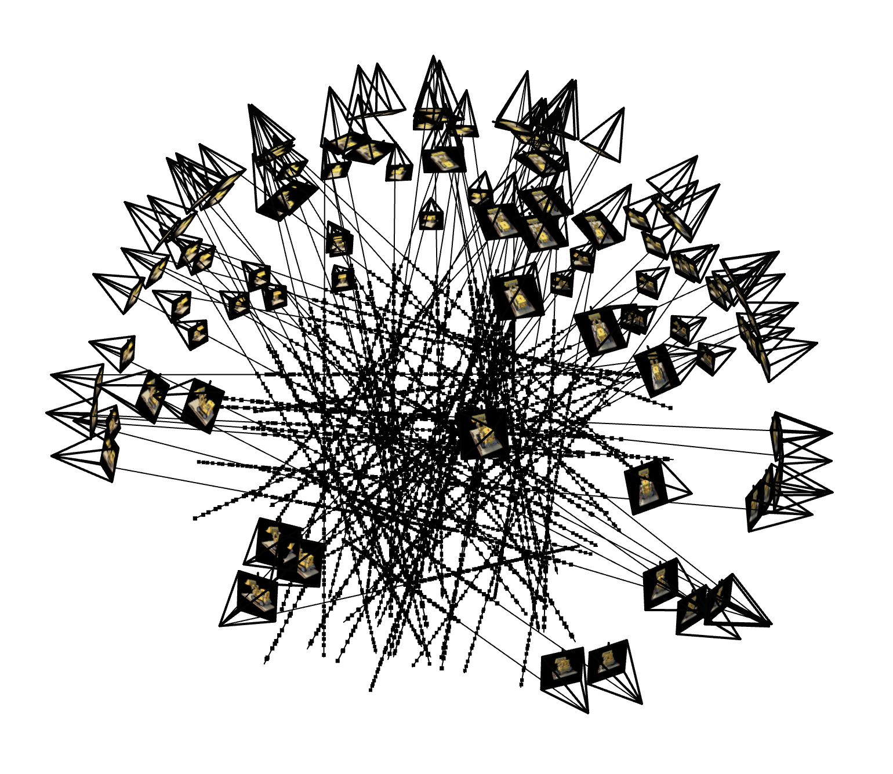
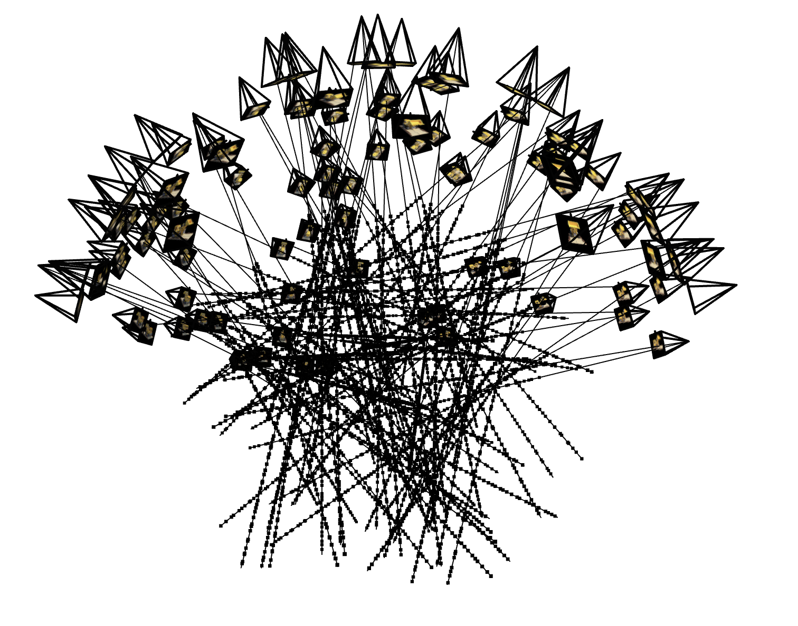
2.4 — NeRF MLP Architecture
The 3D NeRF network NeRFMLP predicts both density and color for each 3D sample:
- Inputs:
- 3D world position \(\mathbf{x} \in \mathbb{R}^3\) (after sampling along ray).
- View direction \(\mathbf{d} \in \mathbb{R}^3\) (normalized ray direction).
- Position encoding: \(\gamma_\text{pos}(\mathbf{x})\) with
pos_L=10. - Direction encoding: \(\gamma_\text{dir}(\mathbf{d})\) with
dir_L=4. - Position branch:
- 8 fully-connected layers with ReLU, width 256.
- Skip connection at layer 4 that concatenates the original position encoding.
- Outputs a feature vector (
feature_dim=256) and a raw density scalar.
- Color branch:
- Concatenates the feature vector and direction encoding.
- Two-layer MLP (hidden 128) with ReLU, then a 3D Sigmoid head for RGB in [0,1].
- Nonlinearities: ReLU on sigma to enforce non-negativity; Sigmoid on RGB.
2.5 — Volume Rendering Implementation
For each ray, I use the standard discrete approximation of the volume rendering integral. Given density \(\sigma_i\), color \(\mathbf{c}_i\), and step size \(\Delta_i\) for each of \(N\) samples:
Final pixel color for a ray:
\[ \hat{\mathbf{C}} = \sum_{i=1}^N T_i \alpha_i \mathbf{c}_i. \]Lego NeRF Training, PSNR, and Novel Views
With all pieces in place, I train NeRF on the Lego dataset:
- Data:
lego_200x200.npz(100 train images, 10 val images, 60 test poses). - Rays per step: 10k randomly sampled rays across all training images.
- Samples per ray: 64 points along each ray, stratified with jitter during training.
- Optimizer: Adam with learning rate \(5\times10^{-4}\).
- Loss: MSE between rendered colors and ground-truth pixels, averaged across the batch.
- Metric: PSNR on a validation set of six images.
Every so many iterations, I render full validation images using render_val_images, store
them in val_snapshots, and compute average PSNR over several views.
Validation Views over Training
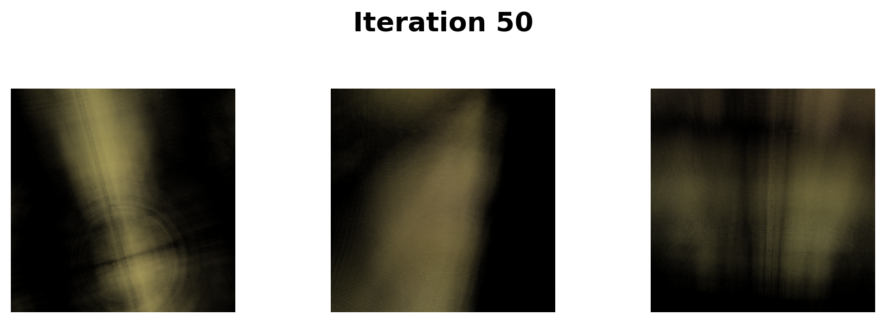
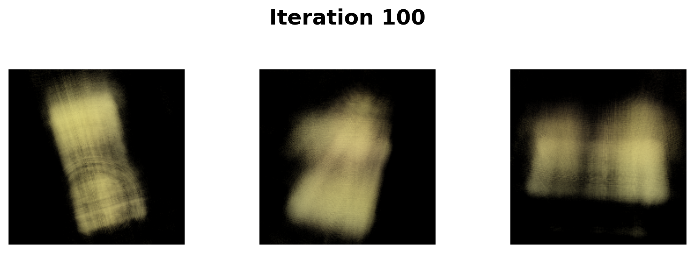
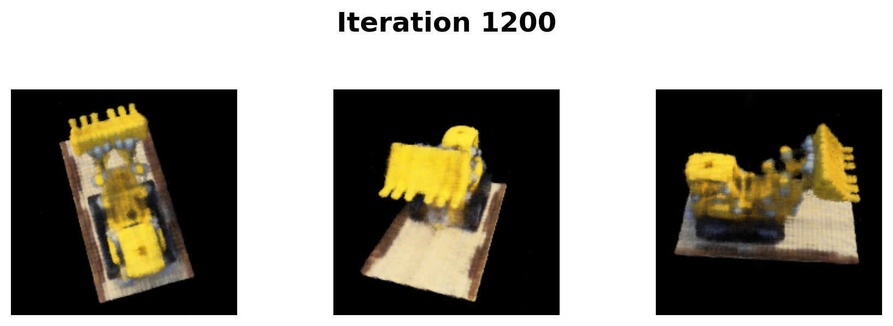
Training PSNR Curve
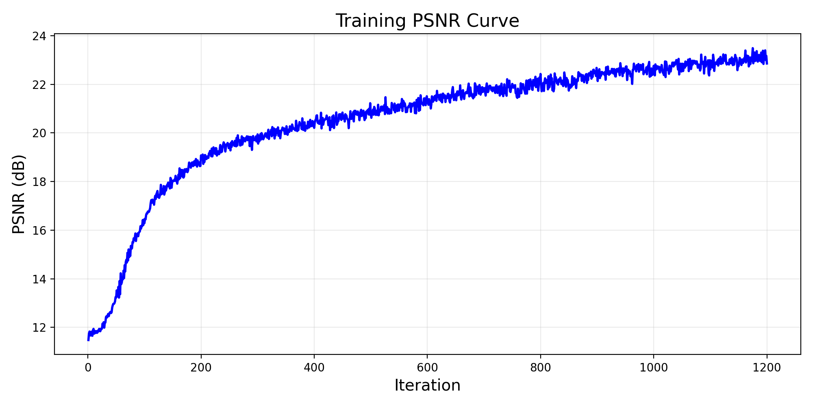
Validation PSNR Curve
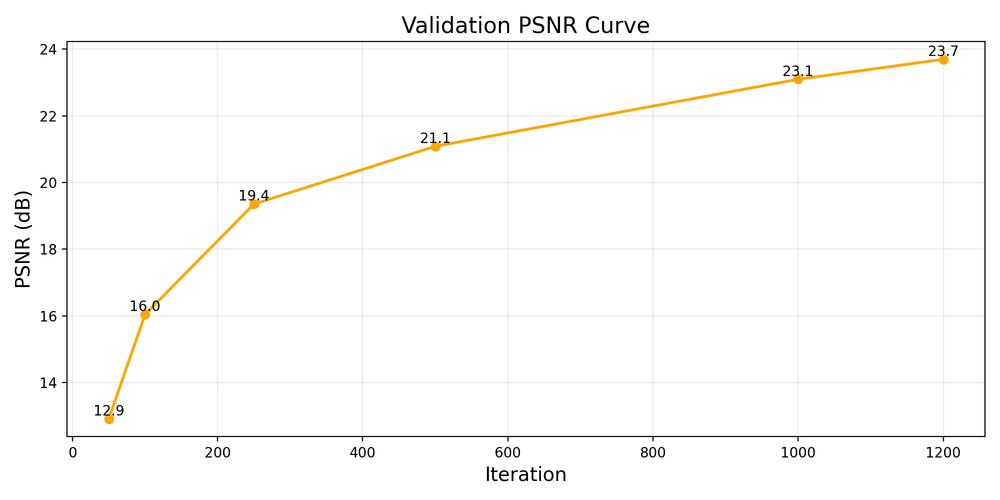
Spherical Lego Rendering
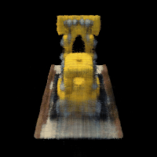
Part 2.6 — NeRF on My Own Object
Training Setup & Adjustments
For my custom object dataset from Part 0, I reuse the same NeRF code path but swap the dataset
to my_object_data.npz. Some settings are tuned for the real-world capture:
- Near / far: Much closer depth range than Lego, based on the physical object size and the Viser visualization (e.g., tens of centimeters instead of meters).
- Samples per ray: 64 samples; I also experimented with 32 samples first to validate correctness and then increased to improve quality.
- Image resolution: If needed, I downsample images to keep training manageable while updating the intrinsics accordingly (or by calibrating at the target resolution).
- Network: Same NeRF MLP as Lego (pos_L=10, dir_L=4, hidden_dim=256).
- Training loop: Identical to Lego training — 10k rays per step, Adam with learning rate \(5\times10^{-4}\), MSE loss on RGB.
Training Progression & Intermediate Renders
During training I periodically render the object from one or more training/validation views to see how the reconstruction evolves.
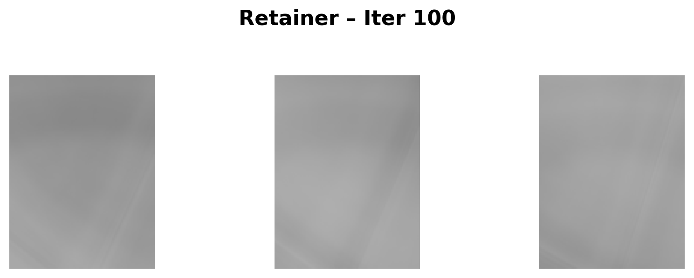
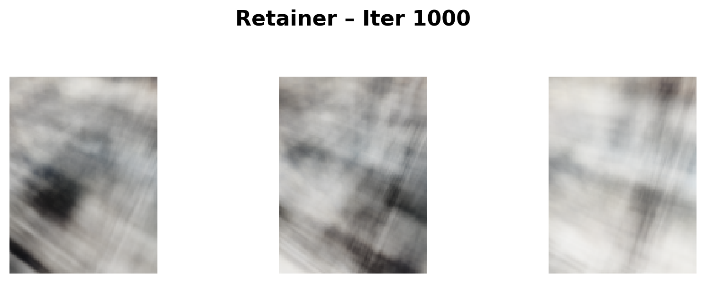
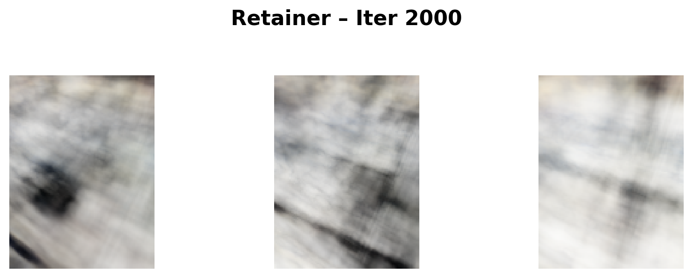
Training Loss Curve
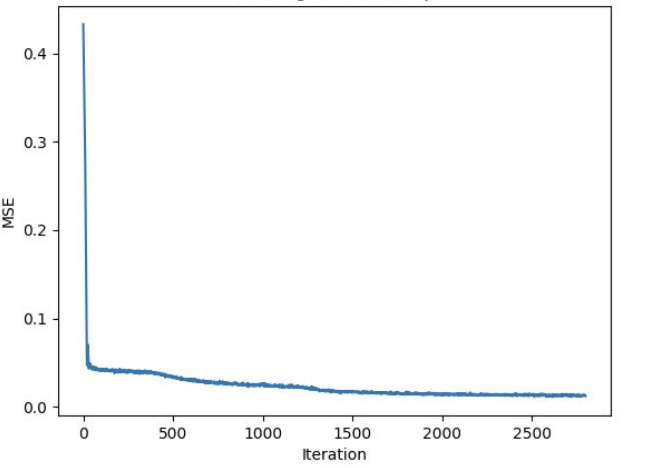
Novel View GIF / Video (Camera Circling the Object)
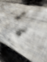
Here, the results look much worse than the lego dataset, but that is almost certainly due to the training data. The images I captured, had varying distances from the center which made it hard for the model to learn. This was the best I could come up with post-hyperparameter tuning.